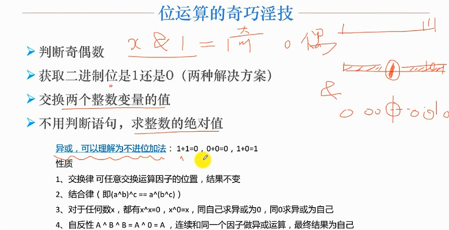
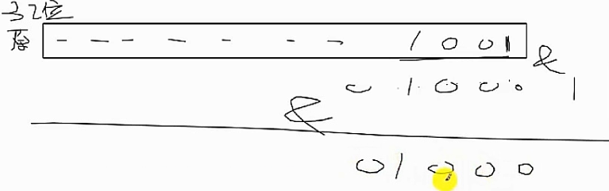
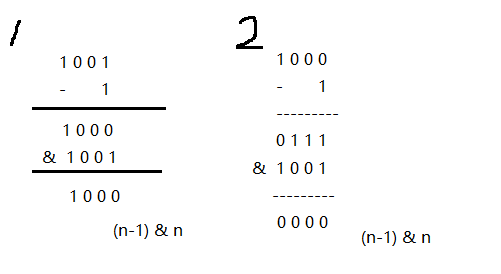
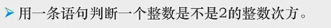
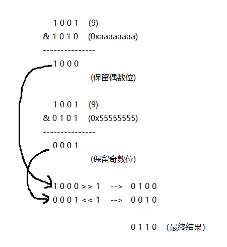
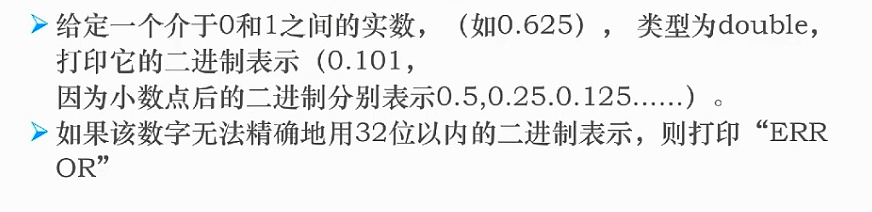
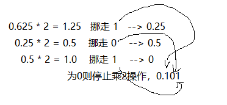

位运算

题1：找出唯一成对的数
解题思路：
n^1^1 = n, 一个数两次^同一个数，得到数本身。
n^0 = n, 任何数异或0都是他自己。
将res^数组下标^数组的value，最终得出的结果就为重复值。
def find_repeat(nums):
res = 0
for i in range(len(nums)):
res ^= i
res ^= nums[i]
return res
print(find_repeat([1, 2, 3, 3, 4, 5, 6]))
题2：二进制中1的个数
解题思路：

解法一
将9的二进制数的每一位与1做与运算，如果结果为1移到该位的值，则该位数字为1，否则为0。
需循环32次，将1依次移到指定位数与9的二进制数做与运算，如果结果为1移到该位的值则计数。
注：32次，整数为四字节表示，一字节八位。
def count_bin_1(n):
count = 0
for i in range(32):
if (1 << i) & n == 1 << i: count += 1
return count
print(count_bin_1(9))
解法二

查看上图总结规律，(n-1)&n实际上就是消除1001中“1”的过程，统计执行了多少次(n-1)&n，即可知道1001中包含几个“1”
def count_bin_1(n):
count = 0
while n != 0:
n = (n - 1) & n
count += 1
return count
print(count_bin_1(15))
题3：是否为2的整数次方

解题思路:
2的整数次方，2^0, 2^1, 2^2, 也就是说，将该数转化为2进制表示，只有一个1出现。
def is2(n):
return not (n-1)&n
print(is2(8))
题4：将二进制整数的奇偶位互换
解题过程

def exchange(n):
ji = n & 0xaaaaaaaa # 10101010 10101010 10101010 10101010
ou = n & 0x55555555 # 01010101 01010101 01010101 01010101
return (ji >> 1) ^ (ou << 1)
print(exchange(9))
题5：0~1间浮点数的二进制表示

解题思路：
浮点数的二进制表示为乘2挪整，如下图

def float_bin(f):
res = ['0.']
while f != 0:
f = f * 2
res.append(str(int(f)))
f -= int(f)
return ''.join(res)
print(float_bin(0.625))
题6：出现k次与出现1次
解题思路：
2个相同的2进制整数不进位加法，结果位0
10个相同的10进制整数不进位加法，结果位0
k个相同的k进制整数不进位加法，结果为0
leetcode137 题
给定一个非空整数数组，除了某个元素只出现一次以外，其余每个元素均出现了三次。找出那个只出现了一次的元素。
说明：
你的算法应该具有线性时间复杂度。 你可以不使用额外空间来实现吗？
示例 1:
输入: [2,2,3,2]
输出: 3
示例 2:
输入: [0,1,0,1,0,1,99]
输出: 99
该题可以用三进制数来实现，3个三进制做不进位加法，为0，落单的即为答案
class Solution:
def singleNumber(self, nums: List[int]) -> int:
# 返回不进位加法之后的三进制
three = 0
for i in range(len(nums)):
three = self.ncarry(three, nums[i], base=3)
return three
def ncarry(self, m, n, base=2):
'''将两个十进制数以k进制数做返回不进位加法返回
m: 十进制数
n: 十进制数
return: 十进制数
'''
m = self.toradix(m, base)
n = self.toradix(n, base)
res = []
for i in range(32):
res.append((m[i]+n[i])%base)
return self.todeci(res, base=3)
def todeci(self, nums, base=2):
'''传入数值列表，将列表转为十进制数，base代表传入的进制'''
res = 0
for i in range(32):
res += (base ** i) * nums[31-i]
return res
def toradix(self, n, base=2):
'''将十进制数转成指定进制
m: 需要转的数
base: 要转换的进制
return: 对应位数组成32位的列表 # [0, 0, 0, 0...1, 1, 1]
'''
res = [0]*32
i = 31 # 下标
while n // base != 0:
res[i] = n % base
n //= base
i -= 1
res[i] = n % base
return res
注意：只适用于列表数字全为正数的情况。
总结
-
异或运算相当于不进位的加法运算，1+1为0，0+0为0，1+0为1，所以异或相同为0，不同为1
-
n^0 = n; n^x^x = n; x^x = 0
-
判断二进制数某位是否为1：1<<某位 & n = 1<<某位，可查阅题2解法一
-
(n-1) & n 从低位依次往高位消除n(二进制表示)中的1。
-
n&0xaaaaaaaa 只保留2进制偶数位；0xaaaaaaaa == 0b10101010 10101010 10101010 10101010
n&0x55555555 只保留2进制奇数位; 0x55555555 == 0b01010101 01010101 01010101 01010101